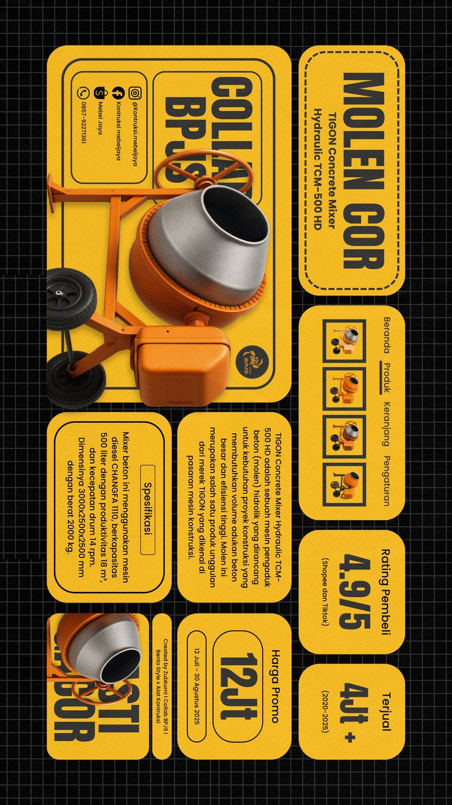
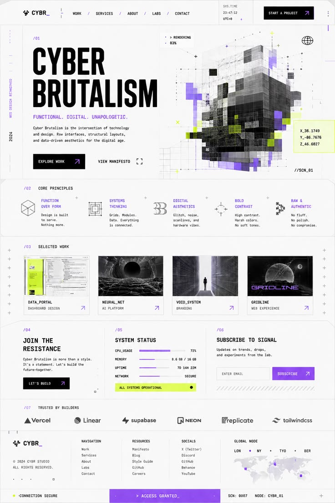
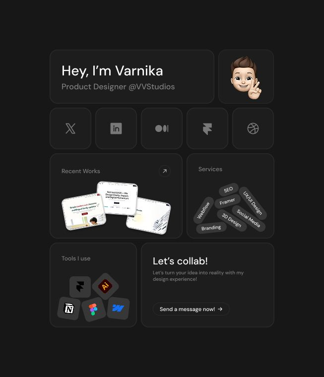
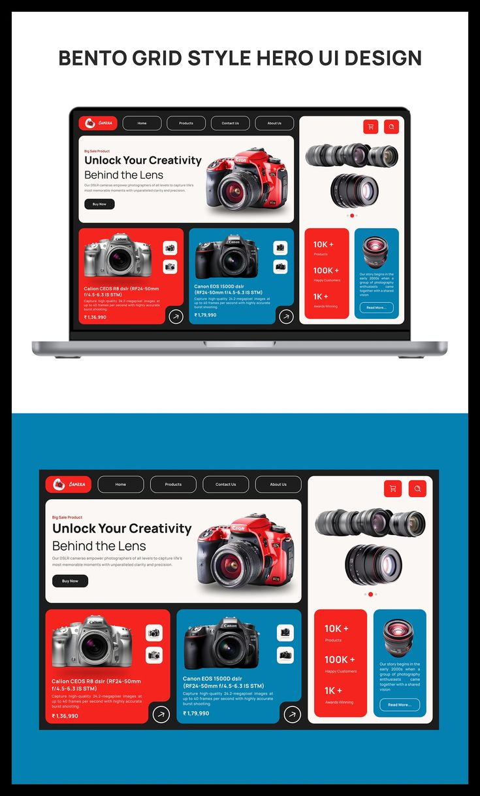
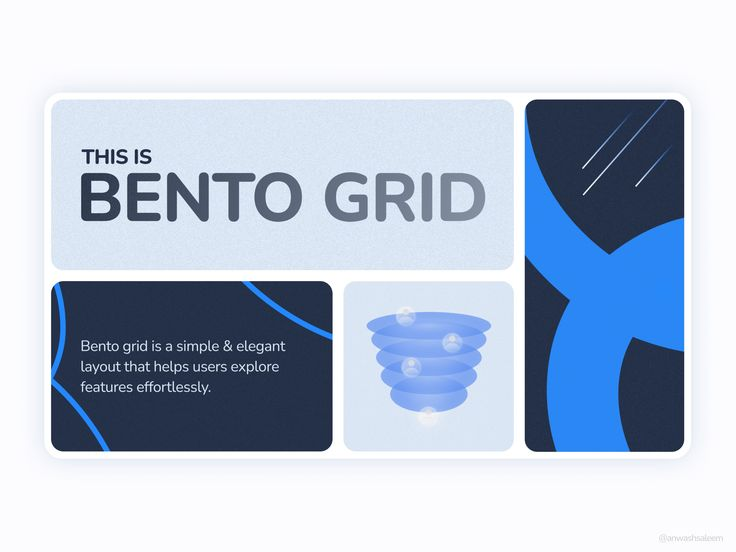

i have very specific opinions on fonts.
inter for the readable stuff because it's clean and doesn't play games with the user's eyes. comfortaa for the headers when you need something that feels a bit more human, a bit more rounded. lately, i've been designing almost entirely in this soft brutalist style. bento grids everywhere. clean borders, heavy lines, but balanced out with soft pastel backgrounds and generous spacing so it doesn't feel aggressive.
there is something so honest about it. it doesn't try to hide the structural layout of the application behind gradients or drop shadows; it just makes the structure look entirely deliberate. UI/UX shouldn't get in the way of what the user came to do. it should guide them smoothly without them even noticing they're being guided.





minimalist but not boring. that's the sweet spot i'm always trying to hit across all our landing pages. if you look at the stuff we're shipping at blue particle studios right now, you can see the progression. it's structured, it's flat, but it feels quietly alive.
bento grids specifically do something interesting to information hierarchy. they let you present a lot of data in a way that doesn't feel overwhelming because the grid itself does the organizing work for you. the user's eye knows where to start. the layout creates implicit priority without you having to spell it out with arrows and callouts.
i think good design is ultimately about reducing the number of decisions the user has to make. every element on screen is either helping them or adding to the cognitive load. the goal is to get that ratio as close to 100% helpful as possible. soft brutalism, done right, is really efficient at that.
← Back to Blog